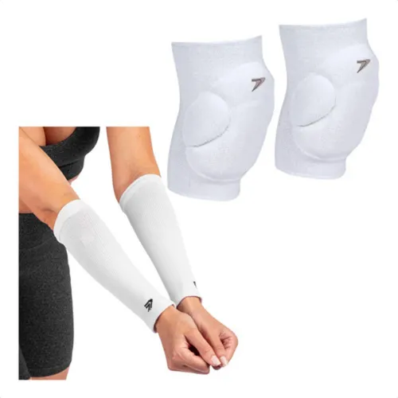
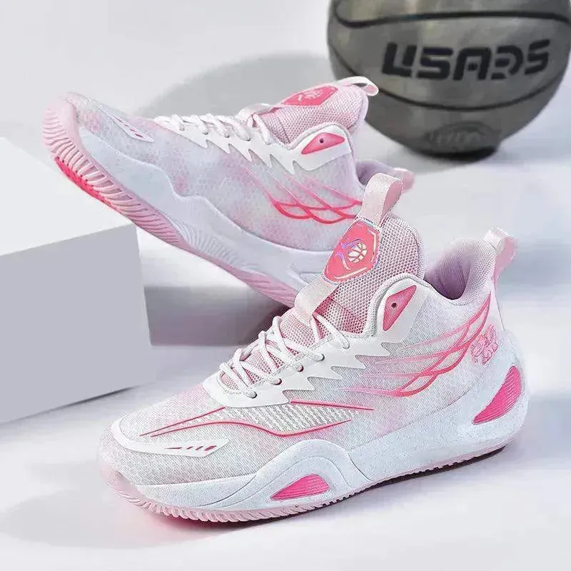

Vôlei
Vôlei
O voleibol ou vôlei é um esporte coletivo praticado em uma quadra dividida por uma rede. Duas equipes disputam a partida com o objetivo de tocar a bola no campo adversário, a qual deve ser arremessada por cima da rede. O voleibol foi criado em 1895 por William George Morgan, diretor de Educação Física da Associação Cristã de Moços (ACM) dos Estados Unidos. Entre os mais famosos, destacam-se Giba, Serginho, Sheilla e Fofão no Brasil, e Paola Egonu na Itália. Mais detalhes
-

Bola de Vôlei Penalty VP 5000
R$ 120,00
Tamanhos da bola: 66 cm
Cores disponíveis: Amarelo/Roxo
-

Kit Joelheira Volêi N1 Sport e Protetor Antebraço Manguito
R$ 399,00
Tamanhos dos protetores: P, M, G
Cores disponíveis: Braco/Preto
-

Tênis de Vôlei - USE0756
R$ 310,00
Tamanhos do tênis: 36, 37, 39, 40
Cores disponíveis: Rosa